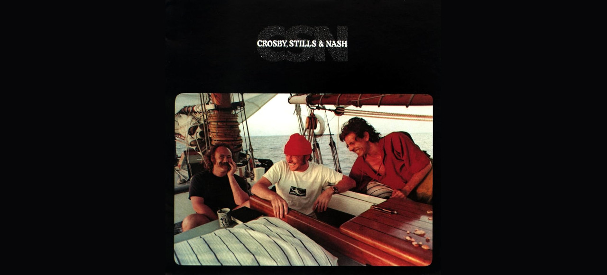

CSN – 1977

Primeiro álbum do grupo sem a presença de Neil Young (o músico era de fato o mais genioso da banda e durante esta gravação Crosby, Stills e Nash perceberam que era melhor tê-lo como planejaram em 1969: apenas parcialmente). As composições da banda continuavam a refletir questões pessoais dos músicos e as canções “Just a song before I go” e “Fair Game” atingiram ótimas posições na parada musical da Billboard. “Dark Star” e “Cathedral” , são também excelentes, sendo a primeira sobre problemas de relacionamento e a segunda uma crítica à igreja católica.